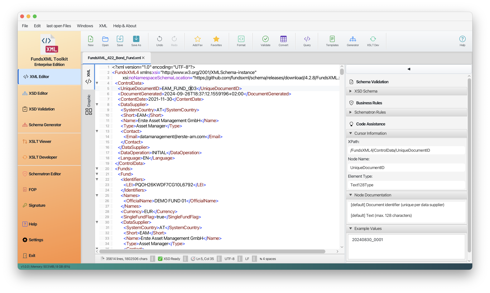
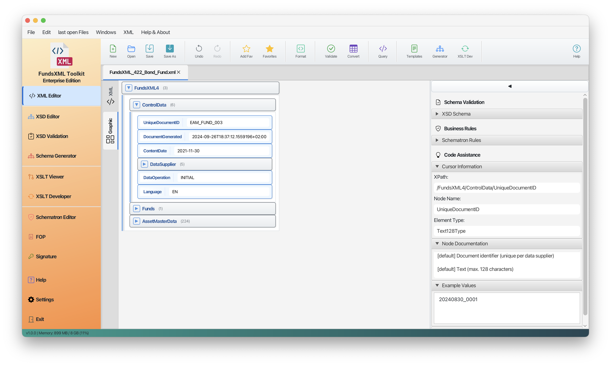
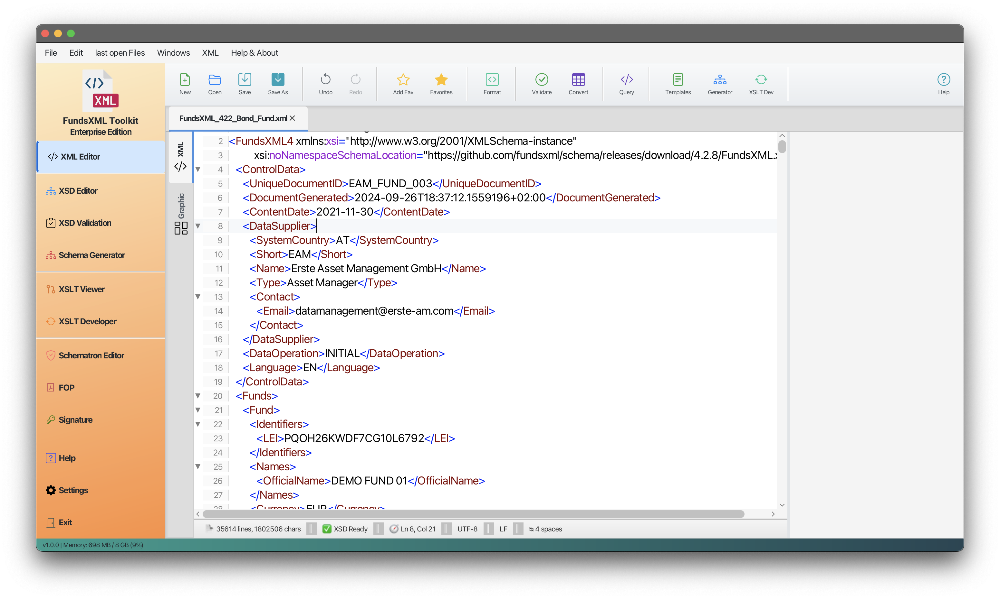
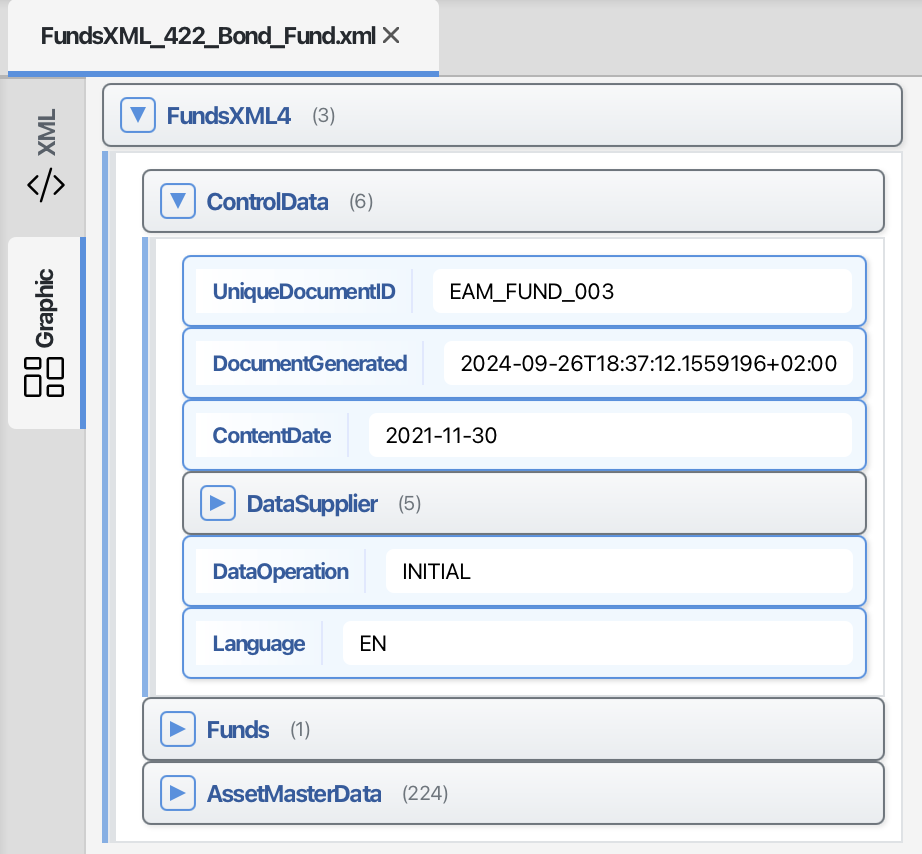
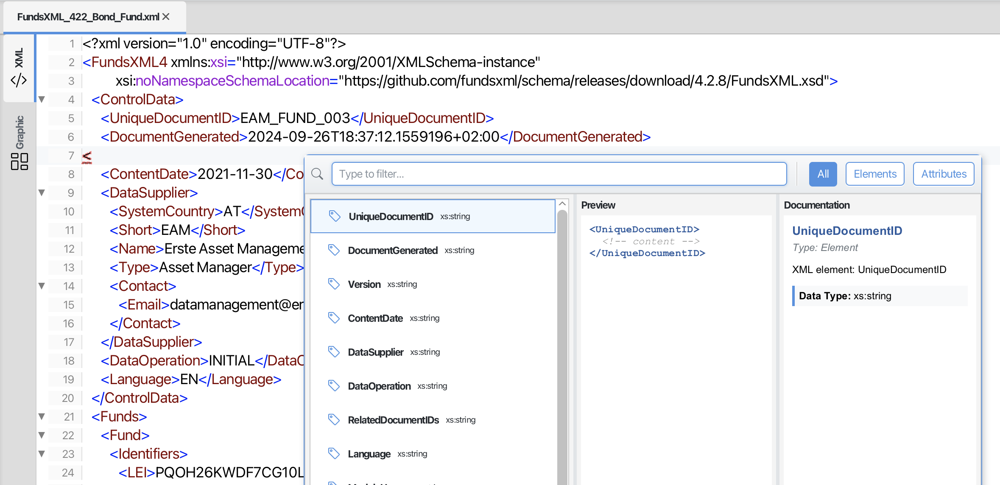
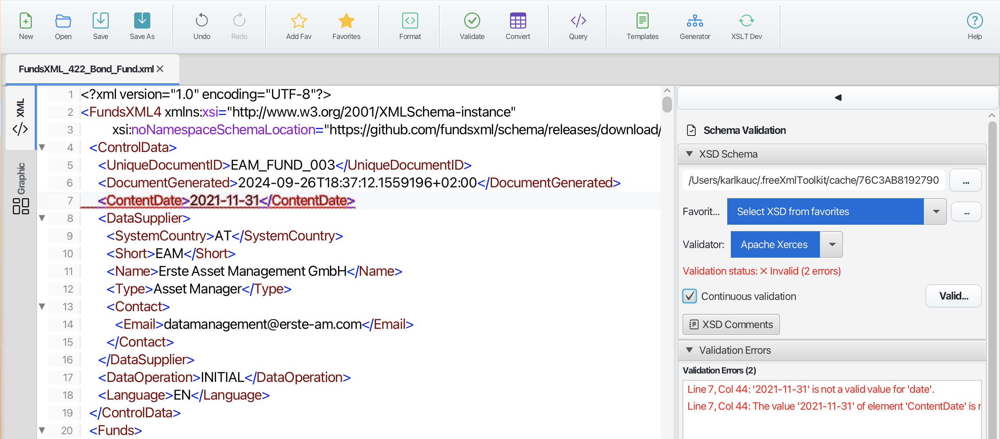

XML Editor¶
Last Updated: December 2025 | Version: 1.1.0
The XML Editor is the main feature of FreeXmlToolkit. It provides a powerful and easy-to-use interface for working with XML files.
Overview¶
 The XML Editor in text mode with syntax highlighting
 The XML Editor in grid mode for structured editing
Toolbar¶
| Button | Shortcut | Description |
|---|---|---|
| New | Ctrl+N | Create new XML document |
| Open | Ctrl+O | Open XML file |
| Save | Ctrl+S | Save current file |
| Save As | Ctrl+Shift+S | Save with new name |
| Recent | Ctrl+Shift+R | Open recent files menu |
| Undo | Ctrl+Z | Undo last change |
| Redo | Ctrl+Y | Redo undone change |
| Add Favorite | Ctrl+D | Add file to favorites |
| Favorites | Ctrl+Shift+D | Toggle favorites panel |
| Format | Ctrl+Alt+F | Pretty print XML |
| Validate | F5 | Validate XML |
| Convert | Ctrl+E | XML/Excel/CSV converter |
| Query | Ctrl+Q | Run XPath/XQuery |
| Templates | Ctrl+T | Open template manager |
| Generator | Ctrl+G | Schema generator |
| XSLT Dev | Ctrl+Shift+T | XSLT development panel |
| Properties | Ctrl+P | Toggle properties panel |
| XPath | Ctrl+Q | Toggle XPath panel |
| Help | F1 | Show help |
Working with Files¶
Opening and Saving Files¶
 File toolbar with Open, Save, and New buttons
File toolbar with Open, Save, and New buttons
- Open Files: Click "Open" or use
Ctrl+Oto browse for XML files - Save Files: Click "Save" or use
Ctrl+Sto save changes - Save As: Use
Ctrl+Shift+Sto save with a new name - Create New: Click "New" to start with an empty XML document
- Drag & Drop: Drag files from your file explorer into the editor
- Recent Files: Quick access to recently opened files
Multiple Files¶
Open multiple XML files in separate tabs. Each tab shows the file name and indicates unsaved changes with an asterisk (*).
Editing Modes¶
Text Mode¶
 Text editor with syntax highlighting
The text editor provides:
- Syntax Highlighting: XML elements, attributes, and values are color-coded
- Line Numbers: Every line is numbered for easy reference
- Code Folding: Click arrows to collapse or expand sections
- Auto-Completion: Type
<to see suggestions for valid elements - Error Highlighting: Invalid XML is highlighted in red
Tree View¶
 Tree view showing XML structure
- See your XML document as a hierarchical tree
- Drag and drop elements to reorganize structure
- Right-click for context menu options
- Double-click to edit element values
Grid Mode¶
 Grid editor showing table-like XML editing
Grid editor showing table-like XML editing
The grid editor provides:
- Table View: Edit XML data in a spreadsheet-like interface
- Direct Cell Editing: Click cells to edit values directly
- Easy Navigation: Move through the document using arrow keys
- Sorting: Sort data by clicking column headers
Auto-Completion (IntelliSense)¶
 Auto-completion popup showing element suggestions
The editor automatically suggests valid elements and attributes based on your XSD schema:
- Type
<to see a list of valid child elements - Navigate through suggestions with arrow keys
- Press Enter to insert the selected element
- Press Escape to close the suggestions
The suggestions are context-sensitive - only elements valid at your current position are shown.
Learn more: Auto-Completion Guide
Formatting Tools¶
Pretty Print¶
 Before pretty print
Before pretty print
Click Format or use Ctrl+Alt+F to format your XML with proper indentation.
 After pretty print
After pretty print
Validation¶
 Validation panel showing errors and warnings
How to Validate¶
- Click Validate or press F5
- If your XML references a schema, it's loaded automatically
- Errors and warnings appear in the validation panel
- Click an error to jump to the problem location
Supported Validation Methods¶
| Method | Description |
|---|---|
| Well-Formed Check | Ensures basic XML syntax is correct |
| XSD Validation | Validates against XML Schema files |
| Schematron | Validates against business rules |
Supported Schema Formats¶
| Format | Support |
|---|---|
| XSD (XML Schema) | Full support (1.0 and 1.1) |
| Schematron | Full support |
| DTD | Not supported |
| RelaxNG | Not supported |
XPath and XQuery¶
 XPath panel with query input and results
XPath panel with query input and results
Use XPath and XQuery to find and extract data from your XML documents.
Using the XPath/XQuery Panel¶
- Toggle the panel with Ctrl+Q or click the XPath button
- Choose XPath or XQuery tab
- Enter your expression
- Click Execute Query
- View results in the editor (matching nodes are highlighted)
XPath Examples¶
| Expression | Description |
|---|---|
//element |
Find all elements named "element" |
//element/@attr |
Find all "attr" attributes on "element" |
/root/child[1] |
Find the first child of root |
count(//item) |
Count all item elements |
//text() |
Find all text nodes |
XQuery Examples¶
| Expression | Description |
|---|---|
for $x in //item return $x |
Return all items |
for $x in //item where $x/@id='1' return $x/name |
Filter and return |
Use the Examples menu for quick insertion of common expressions.
XML/Excel/CSV Converter¶
Click Convert (Ctrl+E) to open the converter dialog:
- XML to Excel: Export XML data to Excel spreadsheet
- XML to CSV: Export XML data to CSV file
- Excel to XML: Import Excel data as XML
- CSV to XML: Import CSV data as XML
Templates¶
Click Templates (Ctrl+T) to access the template manager:
- Insert pre-defined XML snippets
- Create your own templates
- Organize templates by category
Learn more: Template Management
Schema Generator¶
Click Generator (Ctrl+G) to generate an XSD schema from your XML:
- Analyze XML structure
- Generate matching XSD schema
- Customize type detection
Favorites¶
Save frequently used files for quick access:
- Add Favorite (Ctrl+D) - Save current file to favorites
- Favorites (Ctrl+Shift+D) - Show/hide favorites panel
The favorites panel appears on the right side.
Learn more: Favorites System
Keyboard Shortcuts¶
| Shortcut | Action |
|---|---|
| Ctrl+N | New file |
| Ctrl+O | Open file |
| Ctrl+S | Save file |
| Ctrl+Shift+S | Save As |
| Ctrl+W | Close tab |
| Ctrl+Z | Undo |
| Ctrl+Y | Redo |
| Ctrl+F | Find |
| Ctrl+H | Replace |
| Ctrl+G | Go to line |
| Ctrl+D | Add to favorites |
| Ctrl+Shift+D | Toggle favorites |
| Ctrl+Alt+F | Format/Pretty Print |
| Ctrl+Q | Toggle XPath panel |
| Ctrl+E | XML/Excel converter |
| Ctrl+T | Templates |
| Ctrl++ | Zoom in |
| Ctrl+- | Zoom out |
| F5 | Validate |
| F1 | Help |
< |
Open auto-completion |
Tips¶
- Multiple Files: Open multiple XML files in different tabs
- Remember Location: The editor remembers the last folder you used
- Font Size: Use
Ctrl++andCtrl+-to adjust font size - Quick Validation: Errors are highlighted as you type
- Drag & Drop: Drag files directly into the editor window
- Recent Files: Use the Recent menu for quick access
Navigation¶
| Previous | Home | Next |
|---|---|---|
| Home | Home | XML Editor Features |
All Pages: XML Editor | XML Features | XSD Tools | XSD Validation | XSLT Viewer | XSLT Developer | FOP/PDF | Signatures | IntelliSense | Schematron | Favorites | Templates | Tech Stack | Licenses